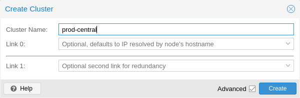
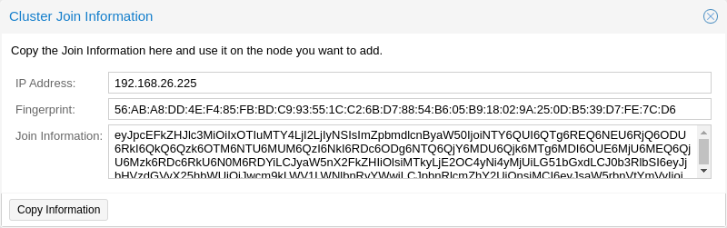
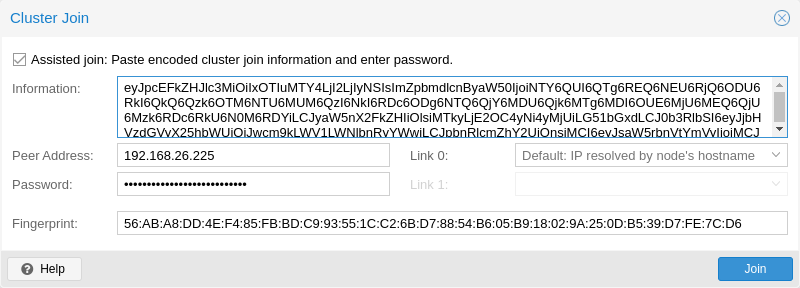

5. 클러스터 관리자#
Proxmox VE 클러스터 관리자 pvecm은 물리적 서버 그룹을 생성하는 도구입니다. 이러한 그룹을 클러스터(cluster)라고 합니다. 안정적인 그룹 통신을 위해 Corosync 클러스터 엔진을 사용합니다. 클러스터의 노드 수에 대한 명시적인 제한은 없습니다. 실제로 가능한 실제 노드 수는 호스트 및 네트워크 성능에 따라 제한될 수 있습니다. 현재 50개 이상의 노드가 있는 클러스터(하이엔드 엔터프라이즈 하드웨어 사용)가 운영되고 있다는 보고가 있습니다.
pvecm은 새 클러스터 생성, 클러스터에 노드 추가, 클러스터에서 노드 제거, 상태 정보 가져오기 및 기타 다양한 클러스터 관련 작업을 수행하는 데 사용할 수 있습니다. Proxmox 클러스터 파일 시스템(Proxmox Cluster File System, pmxcfs)은 클러스터 구성을 모든 클러스터 노드에 투명하게 배포하는 데 사용됩니다.
노드를 클러스터로 그룹화하면 다음과 같은 이점이 있습니다:
중앙 집중식 웹 기반 관리
멀티 마스터 클러스터: 각 노드가 모든 관리 작업을 수행할 수 있습니다.
데이터베이스 기반 파일 시스템인 pmxcfs를 사용하여 구성 파일을 저장하고, corosync를 사용하여 모든 노드에 실시간으로 복제합니다.
물리 호스트 간에 가상 머신과 컨테이너의 손쉬운 마이그레이션
빠른 배포
방화벽 및 HA와 같은 클러스터 전체 서비스
5.1. 요구사항#
corosync가 작동하려면 모든 노드가 5405-5412번 UDP 포트를 통해 서로 연결할 수 있어야 합니다.
날짜와 시간이 동기화되어야 합니다.
노드 간 22번 TCP 포트의 SSH 터널이 필요합니다.
고가용성에 관심이 있는 경우 안정적인 쿼럼을 위해 최소 3개의 노드가 있어야 합니다. 모든 노드의 버전이 동일해야 합니다.
특히 공유 스토리지를 사용하는 경우에는 클러스터 트래픽을 위한 전용 NIC를 사용하는 것이 좋습니다.
노드를 추가하려면 클러스터 노드의 root 비밀번호가 필요합니다.
가상 머신의 온라인 마이그레이션은 노드에 동일한 공급업체의 CPU가 있는 경우에만 지원됩니다. 그렇지 않은 경우에도 작동할 수 있지만 보장되지는 않습니다.
Proxmox VE 6.X의 더 이전 버전으로 클러스터를 수행할 수 없습니다. Proxmox VE 6.x와 이전 버전 간의 클러스터 프로토콜(corosync)이 근본적으로 변경되었습니다.
5.2. 노드 준비#
먼저 모든 노드에 Proxmox VE를 설치합니다. 각 노드가 최종 호스트 이름 및 IP 구성으로 설치되었는지 확인하세요. 클러스터 생성 후에는 호스트 이름과 IP를 변경할 수 없습니다.
일반적으로 모든 노드 이름과 해당 IP를 /etc/hosts에서 참조하거나 다른 방법으로 이름을 확인할 수 있도록 하는 것이 일반적이지만, 클러스터가 작동하는 데 반드시 필요한 것은 아닙니다. 하지만 기억하기 쉬운 노드 이름을 사용하여 SSH를 통해 한 노드에서 다른 노드로 연결할 수 있으므로 유용할 수 있습니다(링크 주소 유형도 참조하세요). 클러스터 구성에서는 항상 노드를 IP 주소로 참조하는 것이 좋습니다.
5.3. 클러스터 생성#
콘솔에서 클러스터를 만들거나(ssh를 통해 로그인), Proxmox VE 웹 인터페이스(Datacenter → cluster)를 사용하여 API를 통해 클러스터를 만들 수 있습니다.
5.3.1. 웹 GUI를 통한 생성#

Datacenter → Cluster에서 Create Cluster 를 클릭합니다. 클러스터 이름을 입력하고 드롭다운 목록에서 메인 클러스터 네트워크로 사용할 네트워크 연결을 선택합니다(Link 0). 기본값은 노드의 호스트 이름을 통해 확인된 IP입니다.Proxmox VE 6.2부터 클러스터에 최대 8개의 폴백 링크를 추가할 수 있습니다. 이중화 링크를 추가하려면
Add 버튼을 클릭하고 각 필드에서 링크 번호와 IP 주소를 선택합니다. Proxmox VE 6.2 이전 버전에서는 두 번째 링크를 폴백으로 추가하려면 Advanced 확인란을 선택하고 추가 네트워크 인터페이스(Link 1)를 선택할 수 있습니다.
5.3.2. 명령줄을 통한 생성#
ssh를 통해 첫 번째 Proxmox VE 노드에 로그인하고 다음 명령을 실행합니다:
hp1# pvecm create CLUSTERNAME
새 클러스터 사용 상태를 확인합니다:
hp1# pvecm status
5.3.3. 동일한 네트워크의 여러 클러스터#
동일한 물리 또는 논리 네트워크에 여러 개의 클러스터를 만들 수 있습니다. 이 경우 클러스터 통신 스택에서 발생할 수 있는 충돌을 피하기 위해 각 클러스터는 고유한 이름을 가져야 합니다. 이렇게 하면 클러스터를 명확하게 구분할 수 있어 사람이 혼동하는 것을 방지할 수 있습니다.
corosync cluster의 대역폭 요구량은 상대적으로 낮지만, 패키지의 지연 시간과 초당 패키지 전송률(PPS)이 제한 요소입니다. 동일한 네트워크에 있는 여러 클러스터가 이러한 리소스를 놓고 서로 경쟁할 수 있으므로 대규모 클러스터의 경우 별도의 물리적 네트워크 인프라를 사용하는 것이 합리적일 수 있습니다.
5.4. 클러스터에 노드 추가#
클러스터에 노드를 추가할 때 /etc/pve의 모든 기존 구성을 덮어씁니다. 특히, 추가되는 노드는 게스트 ID가 충돌할 수 있으므로 GuestOS를 보유할 수 없으며, 노드는 클러스터의 스토리지 구성을 상속받게 됩니다. 기존 게스트가 있는 노드에 참여하려면 해결 방법으로 각 게스트의 백업을 만든 다음(vzdump 사용) 참여 후 다른 ID로 복원할 수 있습니다. 노드의 스토리지 레이아웃이 다른 경우에는 노드의 스토리지를 다시 추가하고 각 스토리지의 노드 제한을 조정하여 실제로 사용 가능한 노드에 반영해야 합니다.
5.4.1. GUI를 통해 클러스터에 노드 추가#

기존 클러스터 노드에서 웹 인터페이스에 로그인합니다. Datacenter → Cluster에서 상단의 Join Information 버튼을 클릭합니다. 그런 다음 Copy Information 버튼을 클릭합니다. 또는 Information 필드에서 문자열을 수동으로 복사합니다.

그런 다음 추가하려는 노드의 웹 인터페이스에 로그인합니다. Datacenter → Cluster에서 Join Cluster을 클릭합니다. Information 필드에 앞서 복사한 Join Information 텍스트를 입력합니다. 클러스터에 가입하는 데 필요한 대부분의 설정이 자동으로 채워집니다. 보안상의 이유로 클러스터 비밀번호는 수동으로 입력해야 합니다.
모든 필수 데이터를 수동으로 입력하려면 지원되는 Assisted Join란을 비활성화하면 됩니다.
Join 버튼을 클릭하면 클러스터에 노드가 추가되는 프로세스가 즉시 시작됩니다. 프로세스가 시작되면 현재 노드 인증서가 클러스터 CA(인증 기관)에서 서명한 인증서로 대체됩니다. 즉, 현재 세션은 몇 초 후에 작동이 중지됩니다. 그런 다음 웹 인터페이스를 강제 새로고침하고 클러스터 자격 증명으로 다시 로그인해야 할 수도 있습니다.
이제 노드가 Datacenter → Cluster 아래에 표시되어야 합니다.
5.4.2. 명령줄을 통해 클러스터에 노드 추가#
ssh를 통해 기존 클러스터에 추가하려는 노드에 로그인합니다.
# pvecm add IP-ADDRESS-CLUSTER
IP-ADDRESS-CLUSTER의 경우 기존 클러스터 노드의 IP 또는 호스트 이름을 사용합니다. IP 주소를 사용하는 것이 좋습니다.
클러스터 상태를 확인하려면 다음을 사용합니다:
# pvecm status
 4개 노드 추가 후 클러스터 상태
4개 노드 추가 후 클러스터 상태
# pvecm status
Cluster information
~~~~~~~~~~~~~~~~~~~
Name: prod-central
Config Version: 3
Transport: knet
Secure auth: on
Quorum information
~~~~~~~~~~~~~~~~~~
Date: Tue Sep 14 11:06:47 2021
Quorum provider: corosync_votequorum
Nodes: 4
Node ID: 0x00000001
Ring ID: 1.1a8
Quorate: Yes
Votequorum information
~~~~~~~~~~~~~~~~~~~~~~
Expected votes: 4
Highest expected: 4
Total votes: 4
Quorum: 3
Flags: Quorate
Membership information
~~~~~~~~~~~~~~~~~~~~~~
Nodeid Votes Name
0x00000001 1 192.168.15.91
0x00000002 1 192.168.15.92 (local)
0x00000003 1 192.168.15.93
0x00000004 1 192.168.15.94
클러스터 노드 리스트
# pvecm nodes
Membership information
~~~~~~~~~~~~~~~~~~~~~~
Nodeid Votes Name
1 1 hp1
2 1 hp2 (local)
3 1 hp3
4 1 hp4
5.4.3. 분리된 클러스터 네트워크로 노드 추가하기#
분리된 클러스터 네트워크가 있는 클러스터에 노드를 추가할 때는 link0 매개 변수를 사용하여 해당 네트워크의 노드 주소를 설정해야 합니다:
# pvecm add IP-ADDRESS-CLUSTER --link0 LOCAL-IP-ADDRESS-LINK0
Kronosnet 전송 계층의 기본 제공 중복성을 사용하려면 link1 매개변수도 사용하세요.
GUI를 사용하면 Cluster Join 대화 상자의 해당 Link X 필드에서 올바른 인터페이스를 선택할 수 있습니다.
5.5. 클러스터에서 노드 제거#
노드에서 모든 가상 머신을 이동합니다. 보관하려는 로컬 데이터 또는 백업의 사본을 모두 만들었는지 확인하세요. 또한 제거할 노드에 대해 예약된 복제 작업을 모두 제거해야 합니다.
다음 예에서는 클러스터에서 노드 hp4를 제거합니다.
hp4가 아닌 다른 클러스터 노드에 로그인하고 pvecm nodes 명령을 실행하여 제거할 노드 ID를 식별합니다:
hp1# pvecm nodes
Membership information
~~~~~~~~~~~~~~~~~~~~~~
Nodeid Votes Name
1 1 hp1 (local)
2 1 hp2
3 1 hp3
4 1 hp4
이 시점에서 hp4의 전원을 끄고 현재 구성으로 (네트워크에서) 다시 전원이 켜지지 않는지 확인해야 합니다.
노드 hp4의 전원을 끄면 클러스터에서 안전하게 제거할 수 있습니다.
hp1# pvecm delnode hp4
Killing node 4
노드 목록을 다시 확인하려면 pvecm nodes 또는 pvecm status를 사용하세요. 다음과 같이 보일 것입니다:
hp1# pvecm status
...
Votequorum information
~~~~~~~~~~~~~~~~~~~~~~
Expected votes: 3
Highest expected: 3
Total votes: 3
Quorum: 2
Flags: Quorate
Membership information
~~~~~~~~~~~~~~~~~~~~~~
Nodeid Votes Name
0x00000001 1 192.168.15.90 (local)
0x00000002 1 192.168.15.91
0x00000003 1 192.168.15.92
어떤 이유로든 이 서버를 동일한 클러스터에 다시 참여시키려면 다음과 같이 해야 합니다:
해당 서버에 Proxmox VE를 새로 설치합니다,
그런 다음 이전 섹션에서 설명한 대로 추가해야 합니다.
제거된 노드의 구성 파일은 여전히 /etc/pve/nodes/hp4에 남아 있습니다. 필요한 구성은 모두 복구하고 나중에 디렉터리를 제거하세요.
5.6. 쿼럼(Quorum)#
Proxmox VE는 쿼럼 기반 기술을 사용하여 모든 클러스터 노드 간에 일관된 상태를 제공합니다.
쿼럼은 분산 시스템에서 작업을 수행하기 위해 분산 트랜잭션이 획득해야 하는 최소 투표 수입니다.
네트워크 파티셔닝의 경우 상태를 변경하려면 과반수의 노드가 온라인 상태여야 합니다. 클러스터가 쿼럼을 잃으면 클러스터는 읽기 전용 모드로 전환됩니다.
5.7. 클러스터 네트워크#
클러스터 네트워크는 클러스터의 핵심입니다. 이 네트워크를 통해 전송되는 모든 메시지는 각각의 순서대로 모든 노드에 안정적으로 전달되어야 합니다. Proxmox VE에서 이 부분은 고성능, 낮은 오버헤드, 고가용성 개발 툴킷을 구현한 corosync에 의해 수행됩니다. 이는 당사의 분산형 구성 파일 시스템(pmxcfs)을 제공합니다.
5.7.1. 네트워크 요구 사항#
Proxmox VE 클러스터 스택은 안정적인 네트워크를 필요로 합니다. 모든 노드 간의 지연 시간이 5밀리초 이하(LAN 성능)여야 안정적으로 작동합니다. 노드 수가 적은 설정에서는 더 높은 지연 시간을 갖는 네트워크가 작동할 수 있지만, 이는 보장되지 않으며 세 개 이상의 노드 및 약 10밀리초 이상의 지연 시간에서는 매우 불가능해집니다.
네트워크는 다른 구성원들에 의해 많이 사용되어서는 안 되며, 코로싱크는 대역폭을 많이 사용하지는 않지만 지연 시간 변동에 민감합니다. 이상적으로 corosync는 자체적으로 물리적으로 분리된 네트워크에서 실행되어야 합니다. 특히 corosync와 스토리지에 대해 공유 네트워크를 사용하지 마십시오(중복 구성에서 잠재적으로 우선 순위가 낮은 대비용으로 사용할 수는 있음).
클러스터를 설정하기 전에 네트워크가 해당 목적에 적합한지 확인하는 것이 좋습니다. 노드가 클러스터 네트워크에서 서로 연결할 수 있는지 확인하려면 ping 도구를 사용할 수 있습니다. Proxmox VE 방화벽이 활성화된 경우, corosync에 대한 ACCEPT 규칙이 자동으로 생성됩니다 - 수동 조치가 필요하지 않습니다.
5.7.2. 클러스터 네트워크 분리#
매개변수 없이 클러스터를 생성하는 경우, 일반적으로 corosync 클러스터 네트워크는 웹 인터페이스 및 가상 머신의 네트워크와 공유됩니다. 설정에 따라 스토리지 트래픽도 동일한 네트워크를 통해 전송될 수 있습니다. corosync는 시간이 중요한 실시간 애플리케이션이므로 이를 변경하는 것이 좋습니다.
새 네트워크 설정
먼저 새 네트워크 인터페이스를 설정해야 합니다. 이 인터페이스는 물리적으로 분리된 네트워크에 있어야 합니다. 네트워크가 클러스터 네트워크 요구 사항을 충족하는지 확인하세요.
클러스터 생성 시 분리
이는 새 클러스터를 만들 때 사용하는 pvecm create 명령의 linkX 매개변수를 통해 가능합니다.
10.10.10.1/25에 고정 주소가 있는 추가 NIC를 설정하고 이 인터페이스를 통해 모든 클러스터 통신을 송수신하려는 경우 다음과 같이 실행합니다:
pvecm create test --link0 10.10.10.1
모든 것이 제대로 작동하는지 확인하려면 다음을 실행합니다:
systemctl status corosync
그런 다음 위와 같이 진행하여 클러스터 네트워크가 분리된 노드를 추가합니다.
클러스터 생성 후 분리
이미 클러스터를 생성한 상태에서 전체 클러스터를 재구축하지 않고 통신을 다른 네트워크로 전환하려는 경우 이 작업을 수행할 수 있습니다. 이 변경으로 인해 클러스터에서 짧은 기간 동안 쿼럼이 손실될 수 있는데, 노드가 corosync를 다시 시작하고 새 네트워크에 차례로 올라와야 하기 때문입니다.
먼저 corosync.conf 파일을 수정하는 방법을 확인하세요. 그런 다음 파일을 열면 다음과 유사한 파일이 표시됩니다:
logging {
debug: off
to_syslog: yes
}
nodelist {
node {
name: due
nodeid: 2
quorum_votes: 1
ring0_addr: due
}
node {
name: tre
nodeid: 3
quorum_votes: 1
ring0_addr: tre
}
node {
name: uno
nodeid: 1
quorum_votes: 1
ring0_addr: uno
}
}
quorum {
provider: corosync_votequorum
}
totem {
cluster_name: testcluster
config_version: 3
ip_version: ipv4-6
secauth: on
version: 2
interface {
linknumber: 0
}
}
ringX_addr은 실제로 corosync 링크 주소를 지정합니다. “ring”이라는 이름은 이전 버전과의 호환성을 위해 유지되는 이전 corosync 버전의 잔재입니다.
가장 먼저 해야 할 일은 노드 항목에 이름 속성이 아직 표시되지 않는 경우 추가하는 것입니다. 이 속성은 노드 이름과 일치해야 합니다.
그런 다음 모든 노드의 ring0_addr 속성에 있는 모든 주소를 새 주소로 바꿉니다. 여기에는 일반 IP 주소나 호스트 이름을 사용할 수 있습니다. 호스트명을 사용하는 경우 모든 노드에서 호스트명을 확인할 수 있는지 확인하세요(링크 주소 유형 참조).
이 예에서는 클러스터 통신을 10.10.10.0/25 네트워크로 전환하고자 하므로 각 노드의 ring0_addr을 각각 변경합니다.
동일한 절차를 사용하여 다른 ringX_addr 값도 변경할 수 있습니다. 그러나 한 번에 하나의 링크 주소만 변경하는 것이 문제 발생 시 복구가 더 쉽기 때문에 권장합니다.
config_version 속성을 변경한 후 새 구성 파일은 다음과 같아야 합니다:
logging {
debug: off
to_syslog: yes
}
nodelist {
node {
name: due
nodeid: 2
quorum_votes: 1
ring0_addr: 10.10.10.2
}
node {
name: tre
nodeid: 3
quorum_votes: 1
ring0_addr: 10.10.10.3
}
node {
name: uno
nodeid: 1
quorum_votes: 1
ring0_addr: 10.10.10.1
}
}
quorum {
provider: corosync_votequorum
}
totem {
cluster_name: testcluster
config_version: 4
ip_version: ipv4-6
secauth: on
version: 2
interface {
linknumber: 0
}
}
그런 다음 변경된 모든 정보가 올바른지 최종 확인한 후 저장하고 다시 한 번 corosync.conf 파일 편집 섹션에 따라 변경 사항을 적용합니다.
변경 사항은 실시간으로 적용되므로 corosync를 반드시 다시 시작할 필요는 없습니다. 다른 설정도 변경했거나 corosync가 불만을 표시하는 경우 선택적으로 재시작을 트리거할 수 있습니다.
단일 노드에서 실행합니다:
systemctl restart corosync
이제 모든 것이 정상인지 확인합니다:
systemctl status corosync
corosync가 다시 작동하기 시작하면 다른 모든 노드에서도 다시 시작하세요. 그러면 새 네트워크에서 하나씩 클러스터 멤버십에 참여하게 됩니다.
5.7.3. Corosync 주소#
corosync 링크 주소(이전 버전과의 호환성을 위해 corosync.conf에서 ringX_addr로 표시됨)는 두 가지 방법으로 지정할 수 있습니다:
IPv4/v6 주소를 직접 사용할 수 있습니다. 정적이고 일반적으로 부주의하게 변경되지 않으므로 이 방법을 권장합니다.
호스트 이름은 getaddrinfo를 사용하여 확인되므로 기본적으로 사용 가능한 경우 IPv6 주소가 먼저 사용됩니다(man gai.conf도 참조하세요). 특히 기존 클러스터를 IPv6로 업그레이드할 때는 이 점을 염두에 두세요.
호스트명은 corosync나 corosync가 실행되는 노드를 건드리지 않고도 확인 주소가 변경될 수 있으므로 corosync에 미치는 영향을 고려하지 않고 주소를 변경하는 상황이 발생할 수 있으므로 주의해서 사용해야 합니다.
호스트명을 선호하는 경우 corosync 전용의 정적 호스트명을 별도로 사용하는 것이 좋습니다. 또한 클러스터의 모든 노드가 모든 호스트 이름을 올바르게 확인할 수 있는지 확인하세요.
Proxmox VE 5.1부터 지원되는 동안 호스트명은 진입 시점에 확인됩니다. 확인된 IP만 구성에 저장됩니다.
이전 버전에서 클러스터에 참여한 노드는 여전히 corosync.conf에서 확인되지 않은 호스트 이름을 사용할 가능성이 높습니다. 위에서 언급한 대로 IP 또는 별도의 호스트 네임으로 대체하는 것이 좋습니다.
5.8. Corosync 이중화#
corosync는 기본적으로 통합된 크로노스넷 계층을 통해 중복 네트워킹을 지원합니다(레거시 udp/udpu 전송에서는 지원되지 않음). 클러스터를 생성하거나 새 노드를 추가하는 동안 GUI에서 pvecm의 –linkX 매개변수를 통해 Link 1로 지정하거나 corosync.conf에 둘 이상의 ringX_addr을 지정하여 둘 이상의 링크 주소를 지정하여 활성화할 수 있습니다.
유용한 장애 조치를 제공하려면 모든 링크가 자체 물리적 네트워크 연결에 있어야 합니다.
링크는 우선순위 설정에 따라 사용됩니다. 이 우선 순위는 corosync.conf의 해당 인터페이스 섹션에서 knet_link_priority를 설정하여 구성하거나, pvecm으로 클러스터를 생성할 때 우선 순위 매개 변수를 사용하여 구성할 수 있습니다:
# pvecm create CLUSTERNAME --link0 10.10.10.1,priority=15 --link1 10.20.20.1,priority=20
우선순위를 수동으로 구성하지 않은 경우(또는 두 링크의 우선순위가 동일한 경우), 링크는 번호 순서대로 사용되며 낮은 번호가 더 높은 우선순위를 갖습니다.
모든 링크가 작동하더라도 우선순위가 가장 높은 링크에만 코로싱크 트래픽이 표시됩니다. 링크 우선순위는 혼합할 수 없으므로 우선순위가 다른 링크는 서로 통신할 수 없습니다.
우선순위가 낮은 링크는 우선순위가 높은 모든 링크가 실패하지 않는 한 트래픽을 볼 수 없으므로 다른 작업(VM, 스토리지 등)에 사용되는 네트워크를 우선순위가 낮은 링크로 지정하는 것이 유용한 전략이 될 수 있습니다. 최악의 경우 지연 시간이 길거나 혼잡한 연결이 전혀 연결되지 않는 것보다 나을 수도 있습니다.
5.8.1. 기존 클러스터에 이중화 링크 추가하기#
실행 중인 구성에 새 링크를 추가하려면 먼저 corosync.conf 파일을 편집하는 방법을 확인하세요.
그런 다음 노드 목록 섹션의 모든 노드에 새 ringX_addr을 추가합니다. 추가하는 모든 노드에서 X가 동일해야 하며 각 노드마다 고유해야 합니다.
마지막으로 토템 섹션에 아래 그림과 같이 새 인터페이스를 추가하고 X를 위에서 선택한 링크 번호로 바꿉니다.
번호가 1번인 링크를 추가했다고 가정하면 새 구성 파일은 다음과 같이 보일 수 있습니다:
logging {
debug: off
to_syslog: yes
}
nodelist {
node {
name: due
nodeid: 2
quorum_votes: 1
ring0_addr: 10.10.10.2
ring1_addr: 10.20.20.2
}
node {
name: tre
nodeid: 3
quorum_votes: 1
ring0_addr: 10.10.10.3
ring1_addr: 10.20.20.3
}
node {
name: uno
nodeid: 1
quorum_votes: 1
ring0_addr: 10.10.10.1
ring1_addr: 10.20.20.1
}
}
quorum {
provider: corosync_votequorum
}
totem {
cluster_name: testcluster
config_version: 4
ip_version: ipv4-6
secauth: on
version: 2
interface {
linknumber: 0
}
interface {
linknumber: 1
}
}
5.9. Proxmox VE 클러스터에서 SSH의 역할#
Proxmox VE는 다양한 기능에 SSH 터널을 활용합니다.
콘솔/셸 세션 프록시(노드 및 게스트)
노드 A에 연결되어 있는 상태에서 노드 B의 셸을 사용하는 경우, 노드 A의 터미널 프록시에 연결되며, 이 터미널 프록시는 비대화형 SSH 터널을 통해 노드 B의 로그인 셸에 연결됩니다.
보안 모드에서 VM 및 CT 메모리와 로컬 스토리지 마이그레이션.
마이그레이션하는 동안 마이그레이션 정보를 교환하고 메모리 및 디스크 콘텐츠를 전송하기 위해 소스 노드와 대상 노드 간에 하나 이상의 SSH 터널이 설정됩니다.
스토리지 복제
5.9.1. SSH 설정#
Proxmox VE 시스템에서는 SSH 구성/설정이 다음과 같이 변경됩니다:
root 사용자의 SSH 클라이언트 구성이 ChaCha20보다 AES를 선호하도록 설정됩니다.
root 사용자의 authorized_keys /etc/pve/priv/authorized_keys에 연결되어 클러스터 내의 모든 인증된 키를 병합합니다. 파일이
비밀번호를 사용하여 root로 로그인할 수 있도록 sshd 를 구성합니다.
구형 시스템에는 모든 노드 호스트 키의 병합된 버전이 포함된 /etc/pve/priv/known_hosts를 가리키는 심볼릭 링크로 /etc/ssh/ssh_known_hosts가 설정되어 있을 수도 있습니다. 이 시스템은 pve-cluster <<인서트 버전>>에서 명시적 호스트 키 고정으로 대체되었으며, 심볼릭 링크가 여전히 있는 경우 pvecm updatecerts –unmerge-known-hosts를 실행하여 구성을 해제할 수 있습니다.